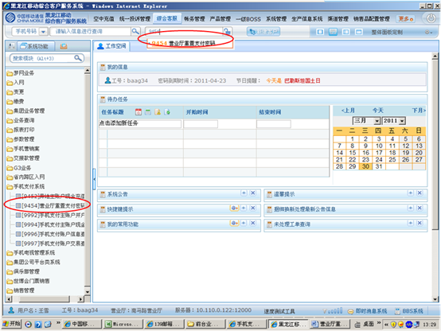
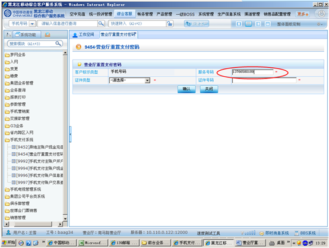
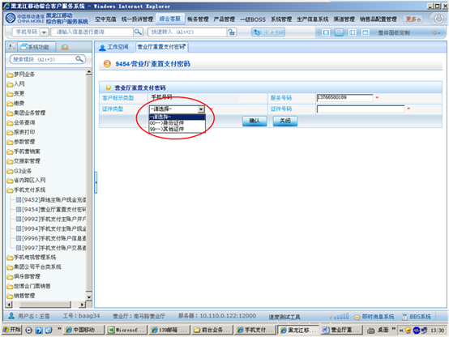
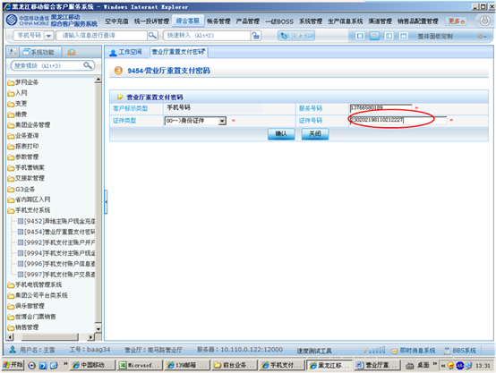
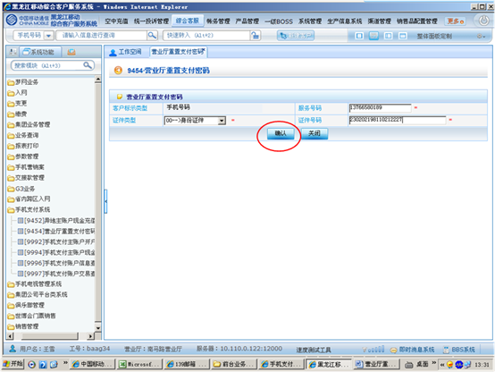
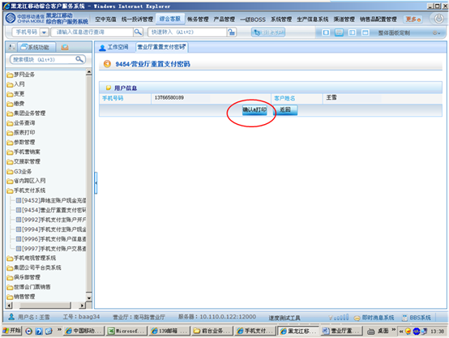
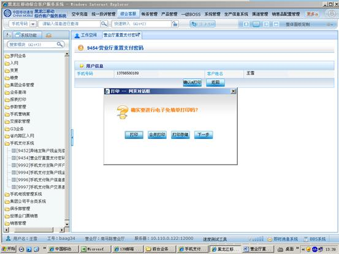

1、进入方式
点击综合客服-手机支付系统-营业厅重置支付密码，或在“快速转入”处输入代码9454营业厅重置支付密码，点击“回车”确定。
2、界面形式及操作步骤说明
（1）点击综合客服-手机支付系统-营业厅重置支付密码，或在“快速转入”处输入代码9454营业厅重置支付密码，点击“回车”确定。

（2）输入“服务号码”。

（3）选择“证件类型”。

（4）输入“证件号码”。

（5）点击“确认”。

（6）点击“确认&打印”。

（7）根据客户本次是否办理多个业务，点击“打印”或“合并打印”或“打印存储”。

（8）点击“确定”提交本次操作。